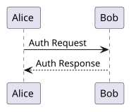
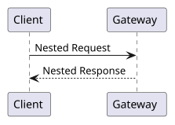
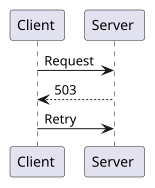

Team A: Getting Started
Welcome to the Team A documentation.
This guide covers the public API owned by Team A.
Installation
Download the latest package and follow the setup steps below.

Note
Diagrams also work when nested inside another directive's body — the extraction and validation phases walk the whole document tree, not just its top level.


The same directive under sphinxcontrib-plantuml's shorter name
.. uml:: is the same construct as .. plantuml:: above — one node, one
compiled picture — so a diagnostic about either names uml.*. The options
here decide only how the finished picture sits on the page, which is why they
never reach the hash the SVG is named by. See retry-flow.
int subtract(int a, int b)Subtracts
bfroma. Written without an explicit domain prefix — Team A's library sets itsdefault_domainBazel attribute toc, so this bare directive resolves toc:functionrather than the global default ofpy.
See subtract for the implementation above.
See also Rinx Example Site, Team A: Getting Started, and Team B: Infrastructure Guide.